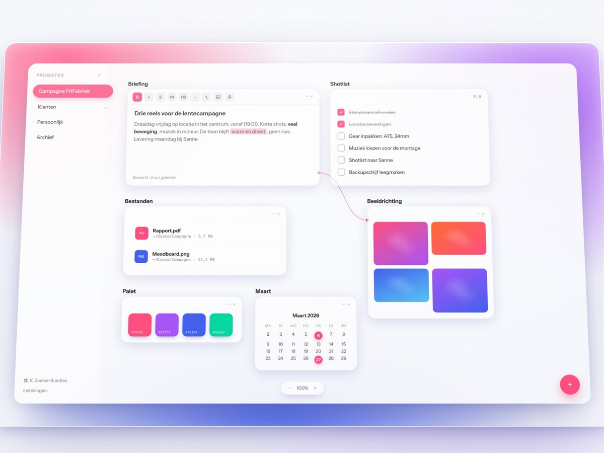
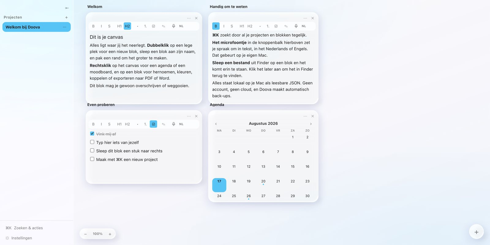
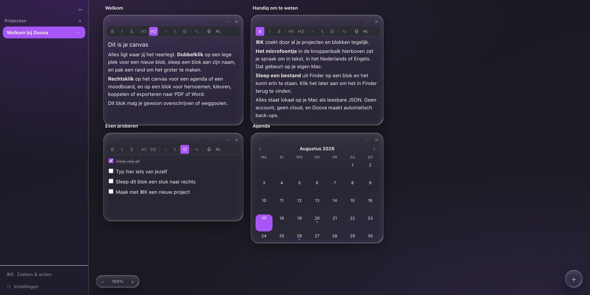
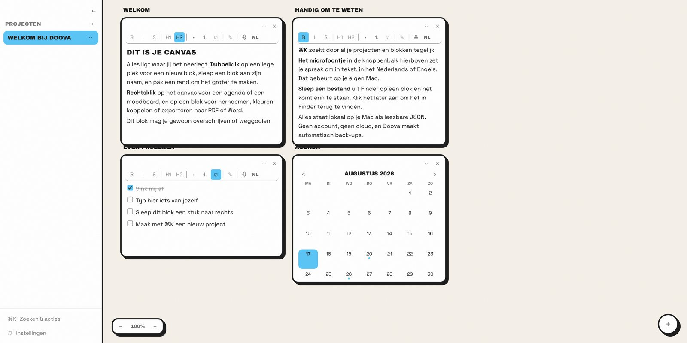
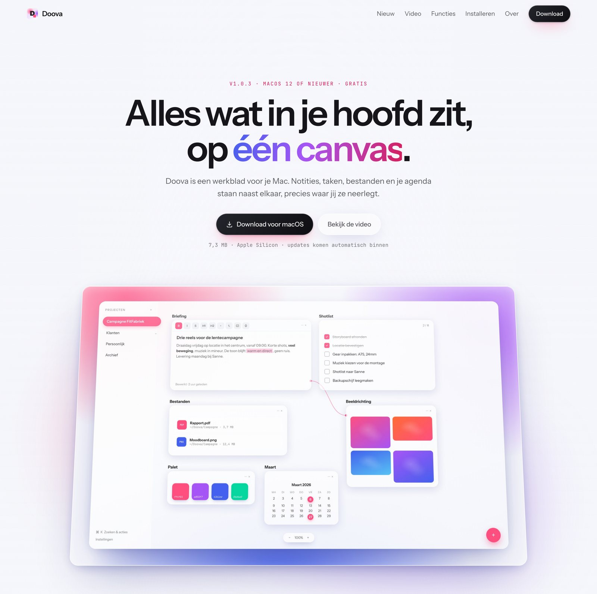
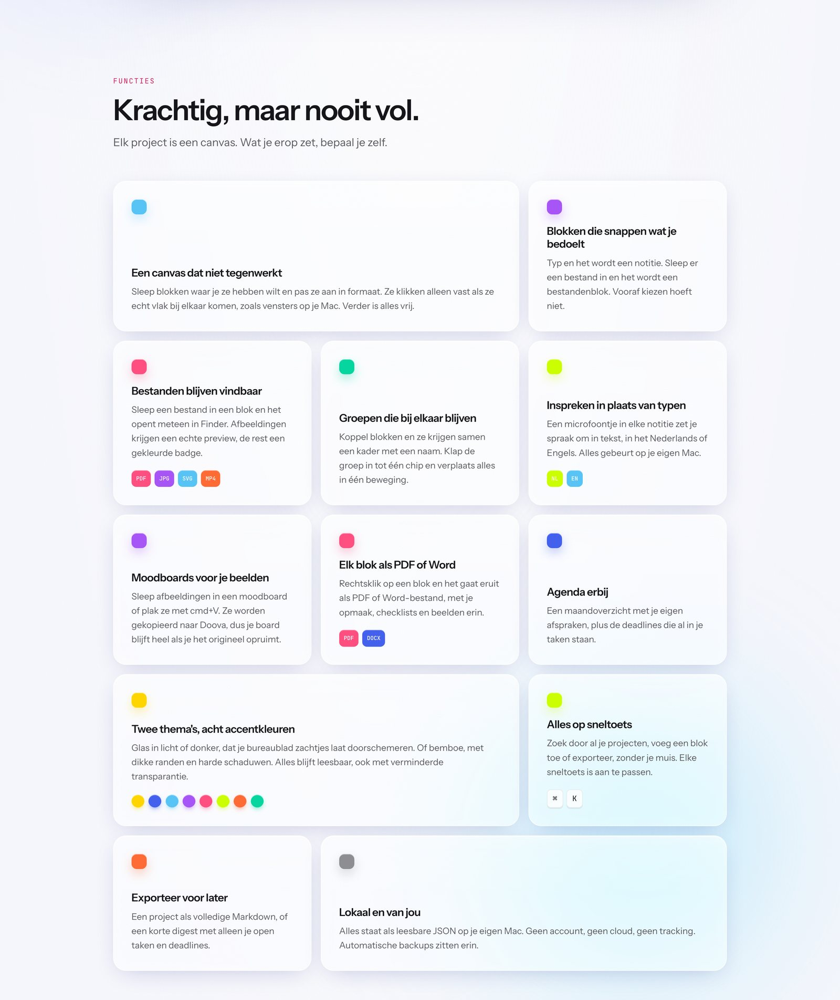

Personal Projects / Doova
Een gratis app voor macOS die ik van begin tot eind zelf heb gemaakt. Idee, naam, merk, interface, code, landingspagina en promo. Doova is een oneindig canvas waar alles wat bij een project hoort naast elkaar ligt: notities, taken, moodboards, bestanden, links, kleuren en je agenda. Alles blijft lokaal op je eigen Mac staan.

Bij elk project raakte ik dezelfde dingen kwijt. De briefing stond in een notitie-app, de shotlist in een takenlijst, de referentiebeelden in een map op mijn bureaublad en de deadline in mijn agenda. Vier plekken, vier keer schakelen, en na twee weken wist ik niet meer waar wat stond.
Doova is mijn antwoord daarop. Eén canvas per project, waar je gewoon neerlegt wat je nodig hebt. Geen mappenstructuur die je vooraf moet bedenken, geen account, geen cloud. Je sleept een bestand erin en het blijft liggen waar jij het legt. Dat klinkt simpel, maar juist dat maakt dat je het echt gebruikt.
Mensen denken in plekken, niet in mappen. Daarom is Doova een vlak waar je dingen neerlegt, en niet een boom waar je ze in stopt.
Je data staat in leesbare JSON in je eigen map. Verplaats die map naar iCloud en je hebt synchronisatie, zonder dat Doova daar iets voor hoeft te weten.
Een leeg canvas verklapt geen enkele beweging. Daarom opent een nieuwe installatie op een welkomstproject dat uit dezelfde blokken bestaat die je zelf zou maken.



Beide promo's zijn niet in een editor in elkaar gezet maar als HTML geschreven en frame voor frame uitgerenderd, met de echte design-tokens van de app. Daardoor is elk paneel scherp op volle resolutie en kan elk blok apart bewegen. Het sound design heb ik er daarna zelf onder gelegd.
De video die op doova.space staat. Donker, rustig getimed, en hij laat vooral zien hoe blokken zich gedragen als je ze aanraakt.
De verticale releasepromo. Fel gradientveld eromheen, rustig glas erbinnen. Dat contrast is het hele idee.
Een statische landingspagina zonder buildstap, in dezelfde taal als de app zelf. De volledige uitleg over hoe die is opgebouwd staat bij Brand Identity.

